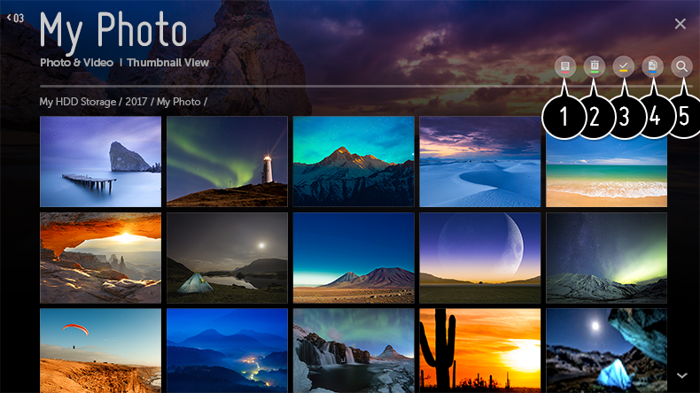
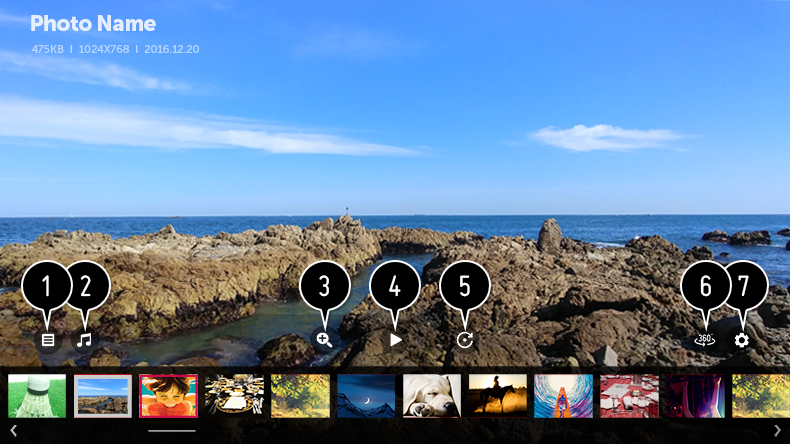
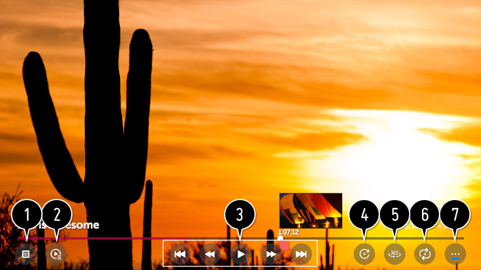
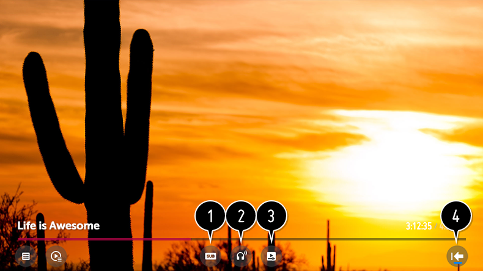

Visualización de fotos y vídeos
Puede ver fotos y vídeos mediante la aplicación Foto y Video.
-
Pulse el botón
 del mando a distancia.
del mando a distancia.
- Ejecute la aplicación Foto y Video.
- Seleccione el dispositivo de almacenamiento que desee.
- Seleccione y vea la foto o el vídeo.

- Permite seleccionar el tipo de contenido y el método de visualización que desee.
-
Permite seleccionar y eliminar el contenido deseado.
No se pueden eliminar archivos compartidos desde otros dispositivos
- Permite seleccionar el contenido que desee reproducir. Solo puede seleccionar el mismo tipo de contenido que seleccionó la primera vez.
-
Puede copiar el contenido en un dispositivo de almacenamiento USB.
Esta función solo está disponible en algunos modelos.
- Inicie Búsqueda.
Es posible que no se muestren ciertos contenidos de la lista si el número total de contenidos supera los 40.000.
Reproductor de fotografías
Al seleccionar una fotografía en la aplicación Foto y Video se ejecuta el reproductor de fotografías. Puede ver las fotografías guardadas.

- Vuelve a la lista completa de contenidos.
- Puede reproducir música de fondo mediante la ejecución del reproductor de música.
- Puede ampliar o reducir las fotos.
- Se inicia la presentación de diapositivas.
- Permite girar las fotos.
-
Las fotos de 360 grados pueden visualizarse en 360 grados.
El uso del REPRODUCCIÓN VR 360˚ en una fotografía normal podría distorsionar la imagen.Esta función solo está disponible en algunos modelos.
- Puede establecer el tamaño de una foto o cambiar la velocidad y el efecto de una presentación de diapositivas.
Archivos de fotos compatibles
| Formato de archivo | Formato | Resolución |
| jpeg, jpg, jpe | JPEG |
Mínimo
:
64 × 64
Máximo Tipo normal : 15360 (ancho) × 8640 (alto) Tipo progresivo : 1920 (ancho) × 1440 (alto) |
| png | PNG |
Mínimo
:
64 × 64
Máximo : 5760 (ancho) × 5760 (alto) |
| bmp | BMP |
Mínimo
:
64 × 64
Máximo : 1920 (ancho) × 1080 (alto) |
Reproductor de vídeo
Al seleccionar un vídeo en la aplicación Foto y Video se ejecuta el reproductor de vídeo. Puede ver los vídeos guardados.

- Vuelve a la lista completa de contenidos.
- Puede seleccionar otro contenido mediante la lista de reproducción mientras está viendo un vídeo.
- Puede controlar las funciones básicas de reproducción de vídeos.
-
Permite girar los vídeos.
Esta función solo está disponible en algunos modelos.
-
Los vídeos de 360 grados pueden visualizarse en 360 grados.
El uso del REPRODUCCIÓN VR 360˚ en un vídeo normal podría distorsionar la imagen.Esta función solo está disponible en algunos modelos.
- Puede realizar los ajustes relativos a la reproducción al repetir el vídeo.
- Puede configurar opciones adicionales.
Configuración de opciones adicionales

- Puede cambiar la configuración de los subtítulos.
- Puede configurar las pistas de audio.
-
Puede establecer continuar viendo para seguir reproduciendo desde la última escena vista.
Cuando se enciende la TV con Inicio rápido+, es posible que continuar viendo no funcione inmediatamente.
- Vuelve a la pantalla de funcionamiento básico.
Archivos de vídeo compatibles
Velocidad máxima de transferencia de datos:
-
Vídeo Full HD
H.264 1920 x 1080, 60P BP/MP/HP, L4.2 40 Mbps como máximo
HEVC 1920 x 1080, 60P Main/Main10, L4.1 40 Mbps como máximo -
Vídeo ULTRA HD
(Solo el modelo ULTRA HD)
H.264 3840 x 2160, 30P BP/MP/HP, L5.1 50 Mbps como máximo
HEVC 3840 x 2160, 60P Main/Main10, L5.1 60 Mbps como máximo -
Vídeo HFR
(Solamente modelos compatibles con HFR)
HEVC 3840 x 2160, 120P Main/Main10, L5.2 60 Mbps como máximo -
Vídeo Dolby Vision
(Solo modelo compatible con Dolby Vision)
HEVC 3840 x 2160, 60P Main/Main10, L5.1 50 Mbps como máximo
Subtítulos externos compatibles
smi, srt, sub (MicroDVD, SubViewer 1.0/2.0), ass, ssa, txt (TMPlayer), psb (PowerDivX), dcs (DLP Cinema)
Formato de subtítulo integrado:
Matroska (mkv)
:
Sub Station Alpha (SSA), Advanced Sub Station Alpha (ASS), SRT
MP4 : Timed Text
MP4 : Timed Text
Códecs de vídeo compatibles
| Extensión | Códec | |
|
asf
wmv |
Vídeo | Perfil VC-1 Advanced (se excluye WMVA), perfiles VC-1 Simple y Main |
| Audio | Estándar WMA (se excluye voz WMA v1 / WMA) | |
| avi | Vídeo | Xvid (se exluye GMC de 3 puntos), H.264/AVC, Motion Jpeg, MPEG-4 |
| Audio | MPEG-1 capa I, II, MPEG-1 capa III (MP3), Dolby Digital, LPCM, ADPCM, DTS | |
|
mp4
m4v mov |
Vídeo | H.264/AVC, MPEG-4, HEVC |
| Audio | Dolby Digital, Dolby Digital Plus, AAC, MPEG-1 capa III (MP3), Dolby AC-4 | |
|
3gp
3g2 |
Vídeo | H.264/AVC, MPEG-4 |
| Audio | AAC, AMR-NB, AMR-WB | |
| mkv | Vídeo | MPEG-2, MPEG-4, H.264/AVC, VP8, VP9, HEVC |
| Audio | Dolby Digital, Dolby Digital Plus, AAC, PCM, DTS, MPEG-1 capa I, II, MPEG-1 capa III (MP3) | |
|
ts
trp tp mts |
Vídeo | H.264/AVC, MPEG-2, HEVC |
| Audio | MPEG-1 capa I, II, MPEG-1 capa III (MP3), Dolby Digital, Dolby Digital Plus, AAC, PCM, Dolby AC-4 | |
|
mpg
mpeg dat |
Vídeo | MPEG-1, MPEG-2 |
| Audio | MPEG-1 capa I, II, MPEG-1 capa III (MP3) | |
| vob | Vídeo | MPEG-1, MPEG-2 |
| Audio | Dolby Digital, MPEG-1 capa I, II, DVD-LPCM | |
|
rm
rmvb |
Vídeo | RV30, RV40 |
| Audio | Realaudio6 (cook), AAC LC, HE-AAC | |
rm, rmvb
:
Esta función solo está disponible en algunos modelos.
Dolby AC-4
:
Esta función solo está disponible en algunos modelos.
Precauciones para la reproducción de vídeos
Es posible que algunos subtítulos creados por el usuario no funcionen correctamente.
El archivo de vídeo y su archivo de subtítulos deben encontrarse en la misma carpeta. Para ver los subtítulos correctamente, asegúrese de que el archivo de vídeo y el de subtítulos tengan el mismo nombre.
En función del fabricante y el modelo, los subtítulos de los dispositivos NAS (Network Attached Storage) podrían no ser compatibles.
No se admite la reproducción de archivos que incluyan GMC (Global Motion Compensation) ni Qpel (Quarterpel Motion Estimation).
Vídeo ULTRA HD
(Solo el modelo ULTRA HD)
:
3840 × 2160, 4096 × 2160
- Es posible que no se puedan reproducir algunos vídeos ULTRA HD codificados como HEVC que no formen parte del contenido ofrecido oficialmente por LG Electronics.
-
Algunos códecs solo son compatibles tras una actualización de software.
Extensión Códec mkv / mp4 / ts Vídeo H.264/AVC, HEVC Audio Dolby Digital, Dolby Digital Plus, AAC
El tamaño de los archivos reproducibles puede variar en función del estado de codificación.
Solo se admite Windows Media Audio V7 o superior.
El perfil principal de AAC no es compatible.
Es posible que no se reproduzcan los archivos de vídeo creados con algunos codificadores.
Es posible que los archivos de vídeo con un formato distinto a los especificados no se puedan reproducir correctamente.
Es posible que los archivos de vídeo guardados en un dispositivo de almacenamiento USB que no admita alta velocidad no se puedan reproducir correctamente.
Solo se admiten los códecs DTS para la reproducción de archivos de vídeo por HDMI y USB.